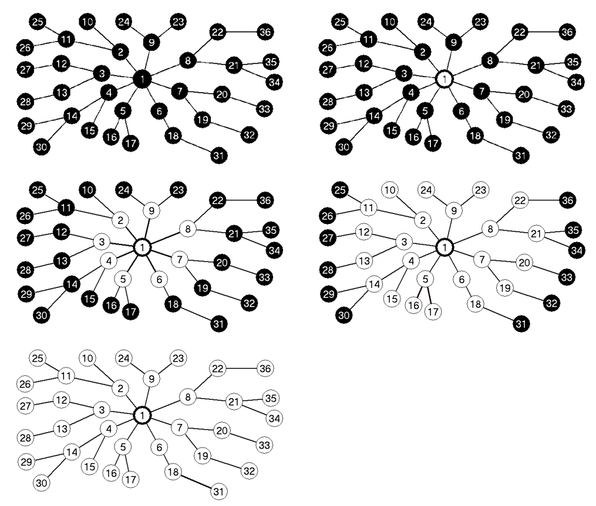
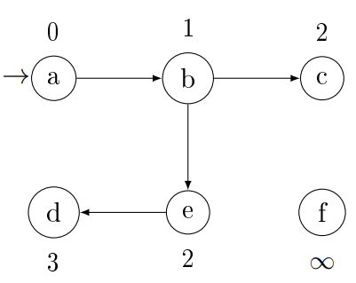
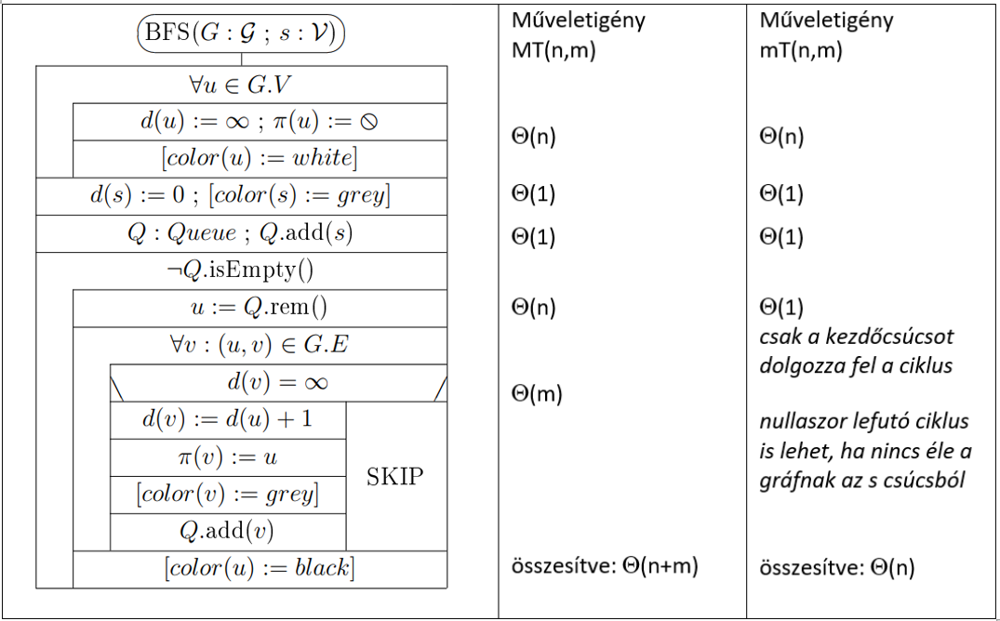

A szélességi keresés az egyik legegyszerűbb gráfbejáró algoritmus, és ezen
alapul sok fontos gráfalgoritmus. Prim minimális feszítőfákra adott algoritmusa és Dijkstra
legrövidebb
utat meghatározó algoritmusa a szélességi kereséshez hasonló gondolatmenetet használ.
Adott irányított vagy irányítatlan, összefüggő vagy nem összefüggő gráf és
egy
kitüntetett $s$ kezdő csúcs esetén a szélességi keresés módszeresen megvizsgálja a gráf
éleit, és
így rátalál minden $s$-ből elérhető csúcsra. Emellett kiszámítja az összes $s$-ből elérhető
csúcsba a távolságot, azaz a legkevesebb élt tartalmazó utatat (optimális utatat). Ha több
ilyen
van, akkor az egyiket. Tehát lehetnek olyan csúcsok és élek, amelyeket nem érint az
algoritmus.
A szélességi keresés elnevezés onnan ered, hogy az algoritmus a már elért
és a
még felfedezetlen csúcsok közötti határvonalat egyenletesen terjeszti ki a határ teljes széltében.
Minden szintet teljesen feldolgoz, mielőtt a következőre lépne, közben pedig éppen a következő
szinten
levő csúcsokat találja meg.

Az algoritmus:
A csúcsokat címkékkel látjuk el:
- $d$ hány élen keresztül jutottunk el a csúcsba (optimális út hossza)
- $\pi$ melyik csúcsból jutottunk el hozzá (szülő csúcs)
Ha a kezdő csúcsból nincs út $u$ csúcsba, akkor $d(u) = \infty$ és $\pi(u) =
\emptyset$. A kezdő csúcsra mindig igaz lesz, hogy $\pi(s) = \emptyset$.
A bejáró algoritmusok, hogy ne „körözzenek” gyakran színezést használnak.
Így
nem „látogathatunk meg” többször egy csúcsot. A szélességi keresés a csúcsok színezésével tartja
számon
a bejárás pillanatnyi állapotát:
- fehér felfedezetlen csúcs (kezdetben mindegyik fehér)
- szürke feldolgozás alatt álló csúcs (megtalált/elért, de még fel nem dolgozott csúcs)
- fekete feldolgozott csúcs
Egy fekete csúcs összes szomszédja elért csúcs (szürke). A szürke csúcsoknak
lehetnek
fehér szomszédaik. Ezek alkotják az elért és a még felfedezetlen csúcsok közötti határt.
A végeredmény egy általános fa lesz, amit szélességi fának és
legrövidebb
utak fájának is nevezünk, mivel az $s$-ből elérhető csúcsokra a legrövidebb utakat
tartalmazza.

Működése:
Az első ciklus inicializálja a csúcsok címkéit, ($d(u) = \infty$ ; $\pi(u) =
\emptyset$). Azokat a csúcsokat, amiket már elértünk (szürke), de még a gyerekeit nem néztük
meg a
$Queue$-ba kerülnek. Így az elején a kezdő csúcs is belekerül. A második ciklus addig fut, amíg van
még fel nem dolgozott elem. Kiveszünk egy
elemet
és beállítjuk a gyerekeit, ($d(v) := d(u) + 1$ ; $\pi (v) := u$). Ha a gyerekénél a $d(u) \neq
\infty$,
akkor már korábban találtunk hozzá optimális utat, tehát az else ág fut le. A ciklus leáll, ha
minden a
kezdő csúcsból elérhető csúcsot feldolgoztunk.
Absztrakt gráf típus:
A szélességi bejárást és nagyon sok másik algoritmust is egy absztrakt gráf
típussal fogunk ábrázolni. Ebben az absztrakt gráf típusban megadjuk a csúcsainak absztrakt típusát
($\mathcal{V}$, vertex) és az élek absztrakt típusát ($\mathcal{E}$, edge). Egy él megadja a két
csúcsot, amelyet összeköt.
| $\mathcal{E}$ |
| $+ u, v: \mathcal{V}$ |
Ezek alapján be tudjuk vezetni az élsúlyozatlan absztrakt gráfot is
($\mathcal{G}$, graph). Ez a gráf típus tartalmazza az élek halmazát ($E$), a csúcsok halmazát ($V$)
és egy metódust, amely megadja egy adott csúcs összes szomszédját ($A$).
| $\mathcal{G}$ |
$+ V: \mathcal{V} \{\}$
$+ E: \mathcal{E} \{\} \space // \space E \subseteq V \times V \setminus \{ (u,u) : u \in V \}$
$+ A: V \rightarrow 2^{V} \space // \space A(u) = \{ v \in V \mid (u,v) \in E \}$ |
Műveletigény:
- $n = |G.V|$ (csúcsok száma), $m = |G.E|$ (élek száma)
- $MT(n, m) \in \Theta(n+m)$
- $mT(n, m) \in \Theta(n)$

Gyakorlati alkalmazása:
Ezen alapul sok fontos gráfalgoritmus: Prim algoritmusa, Sor-alapú Bellman-Ford
algoritmus. Dijkstra algoritmusa is hasonló gondolatmenetet használ.